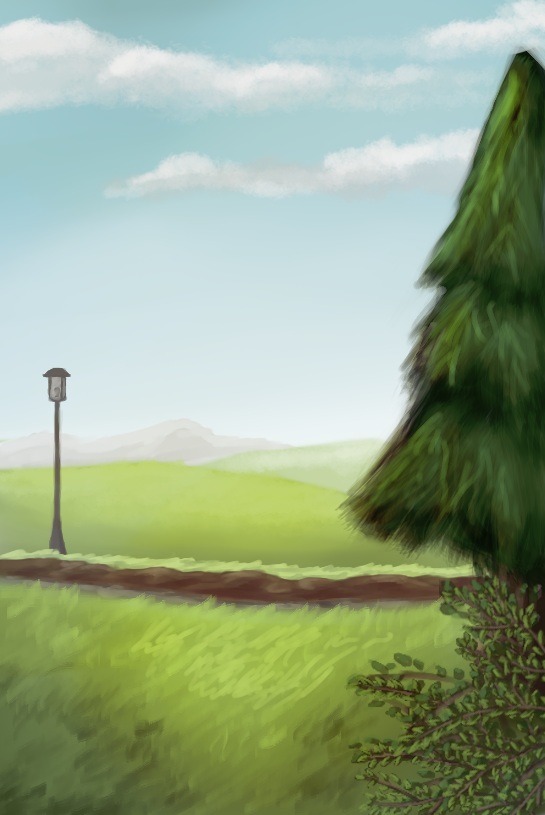
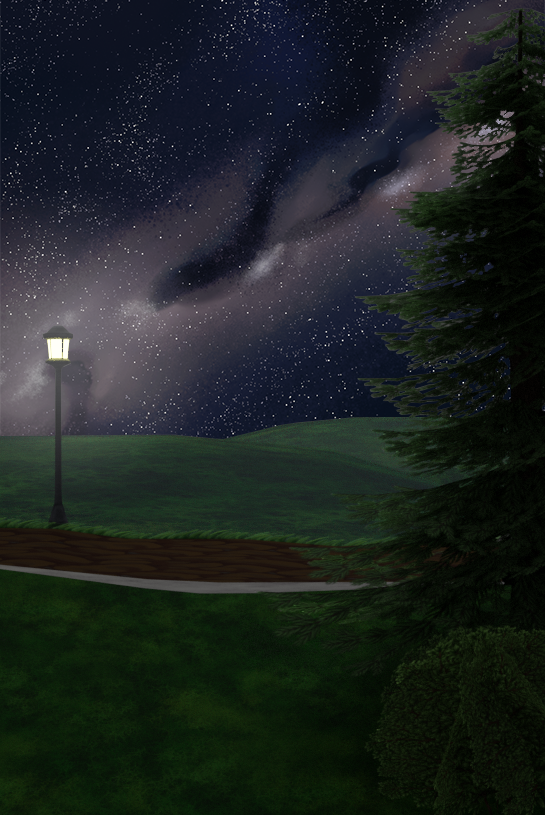
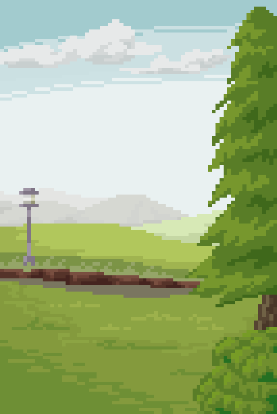

Mit diesem kleinen Programm möchte ich mein Basis-Wissen über Web-Entwicklung zeigen,
während ich ein bisschen was über meine anderen Fähigkeiten erzähle.
Das Programm benutzt handgezeichnete Icons & Bilder und
besteht aus einer einzelnen HTML Datei. Alle Bilder, sowie eine Blender-Projekt Datei (ver. 2.93.1)
gehören zu meiner Präsentation und sind in ihren Ordnern enthalten.
Das komplette Programm besteht zudem aus einer einzelnen HTML.

Zeichnen
Mit dem Zeichnen fing ich in meiner Jugend an und habe seitdem immer Mal wieder kleinere aber auch große Durchbrüche erlebt.
Mein großes Interesse dafür entwickelte ich aber erst vor ein paar Jahren als ich mir mein erstes Grafiktablett zugelegt habe,
seitdem bevorzuge ich es - auch wenn mir das Zeichnen mit Stift und Radiergummi gefällt - Grafiken am Computer zu erstellen.
Auch wenn zeichnen an sich etwas ist, das Übung und Lernbereitschaft erfordert, habe ich mit der Zeit festgestellt,
dass das nur die Oberfläche ist an der man kratzt. Jede Praxis - unabhängig vom Zeichnen - erfordert, dass man am Ball bleibt.
Mit tieferem Verständnis dafür, lernte ich mehr über das Zusammenspiel von Farben, wie man Formen im Alltag erkennt
und sie auf die Leinwand bringt. Während ich früher sehr detailverliebt Bilder bis ins Extremse ausgefüllt habe,
ist es mir heute zunehmend wichtiger geworden einen Schritt zurück zu treten und mir die Frage zu stellen:
"Ist das was ich da gerade zeichne auch wirklich das was ich ausdrücken möchte?"
Beim Zeichnen gibt es kein 'richtig' oder 'falsch'. Es geht darum Gedanken und Gefühle visuell aufs Papier zu bringen,
und ist für mich daher eine eigene Sprache. Ein Bild sagt schließlich mehr als tausend Worte.

3D
Eines meiner großen Leidenschaften in denen ich mich gerne verliere und Zeit investiere ist Ideen die ich schon Mal
aufs Blatt gebracht habe tiefergreifend in 3D zu erkunden und es aus einem anderen Sichtwinkel zu betrachten.
Mir gefällt es Umfeld und Umgebung zu erkunden und quasi aus dem Nichts etwas beinahe greifbares zu gestalten.
In einer gewissen Art und Weise ist für mich der Prozess mit 3D zu arbeiten als würde ich mit formbarer Knete hantieren,
wenn mir etwas nicht gefällt, lässt es sich zügig auseinander nehmen oder umformen.

Pixel Art
Etwas was heutzutage immer seltener angewandt wird, ist mit bloßen Pixeln zu malen. Meistens in sehr kleine Auflösungen
lassen sich solche Bilder problemlos auch hochskalieren. Warum aber ist das etwas, dass ich hin und wieder bevorzuge?
Pixel Art ist für mich eine herausfordernde Kunst in der man mit starken Einschränkungen und unter minimalsten Bedingungen
seine Ideen und Kreativität zum Ausdruck bringen kann. Mancher würde da schnell behaupten, dass das primitiv sei.
Die Wahrheit ist jedoch, dass Pixel Art sehr komplex ist und den Einsatz von Techniken erfordert
um sich aus den gegebenen Einschränkungen zu befreien und dem Bild eine Stimme gibt.
Während Pixel Art früher lediglich zur Spielentwicklung verwendung fand ist es heute eine spannende und kreative Art und Weise
Grafiken zu erstellen die minimale Mengen an Speicher benötigen und dennoch genau das Vermitteln was man braucht.
Das Bild links ist von der Dateigröße kleiner (ca. 9KB) als das Icon das zu dieser Seite herführt (ca. 18KB).